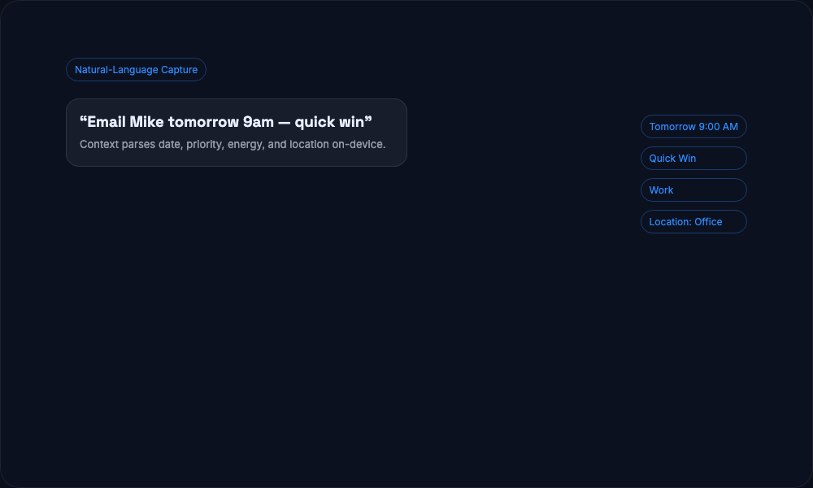

Capture tasks the way you think. Context parses dates, priority, energy, delegation, and location — on‑device.
“Email Mike tomorrow at 9am — quick win” becomes a structured task automatically.
Dictate from iPhone or Apple Watch. Context turns speech into actionable tasks.
Menu bar capture on Mac, quick actions on iOS, and always‑ready watch capture.
Friction kills productivity. Natural‑language capture removes the overhead so you can move fast.